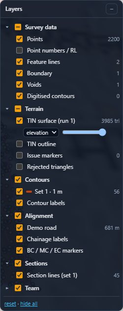
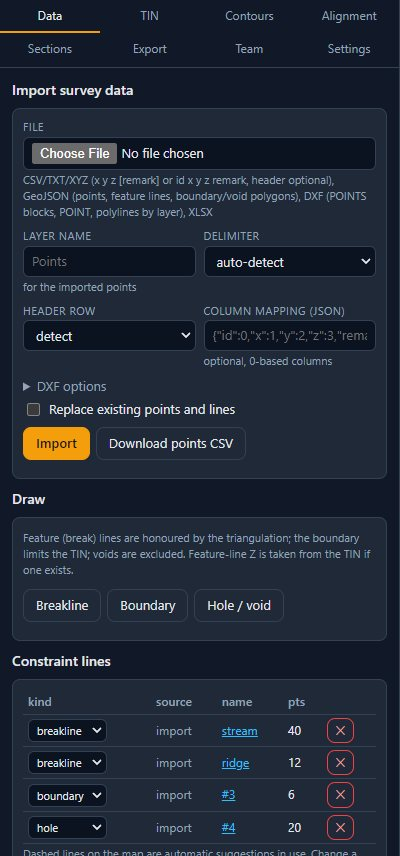
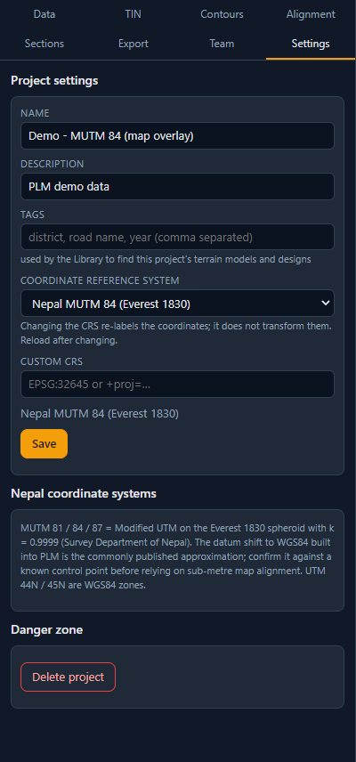
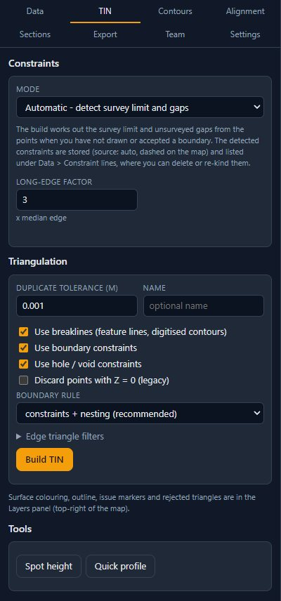
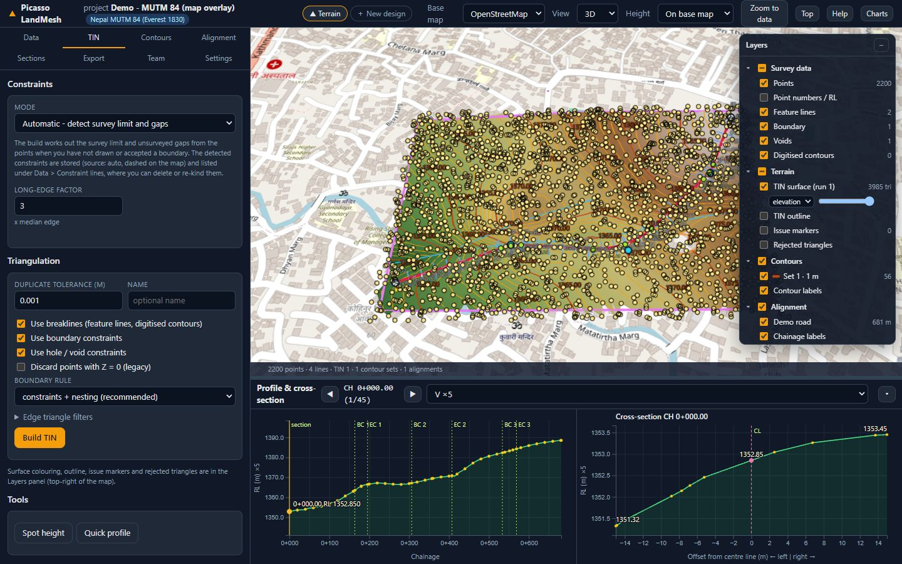
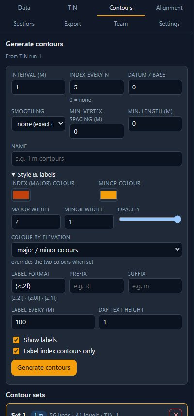
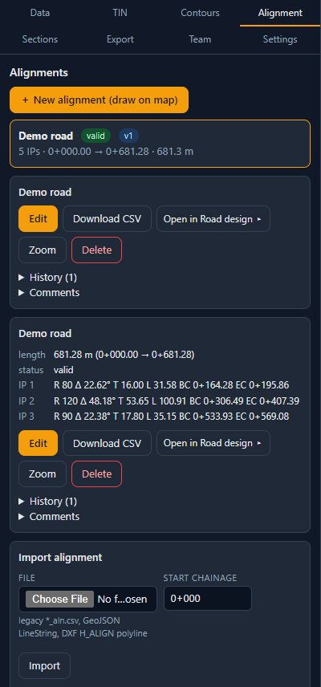
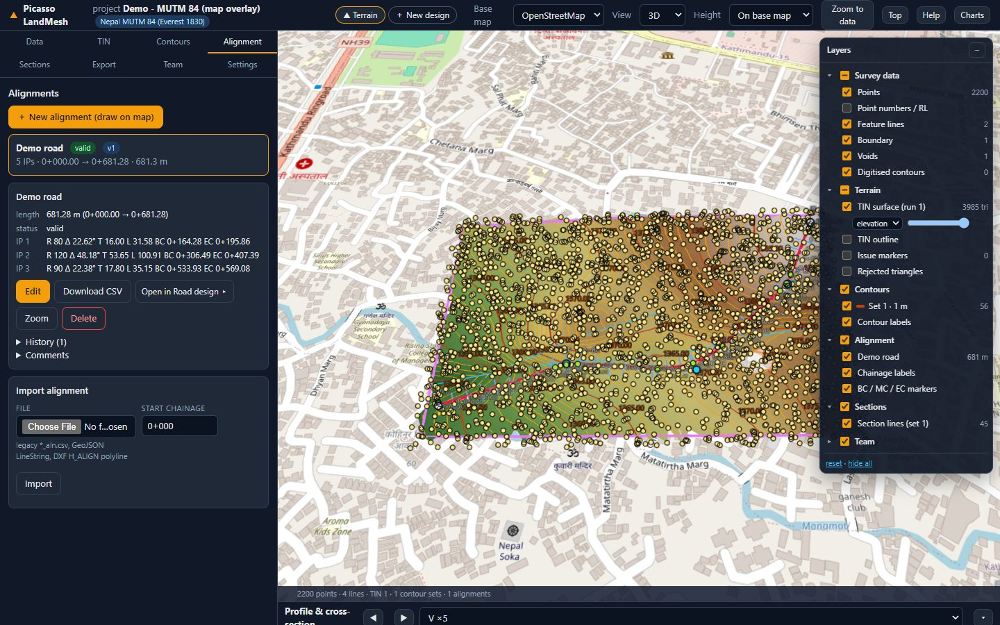
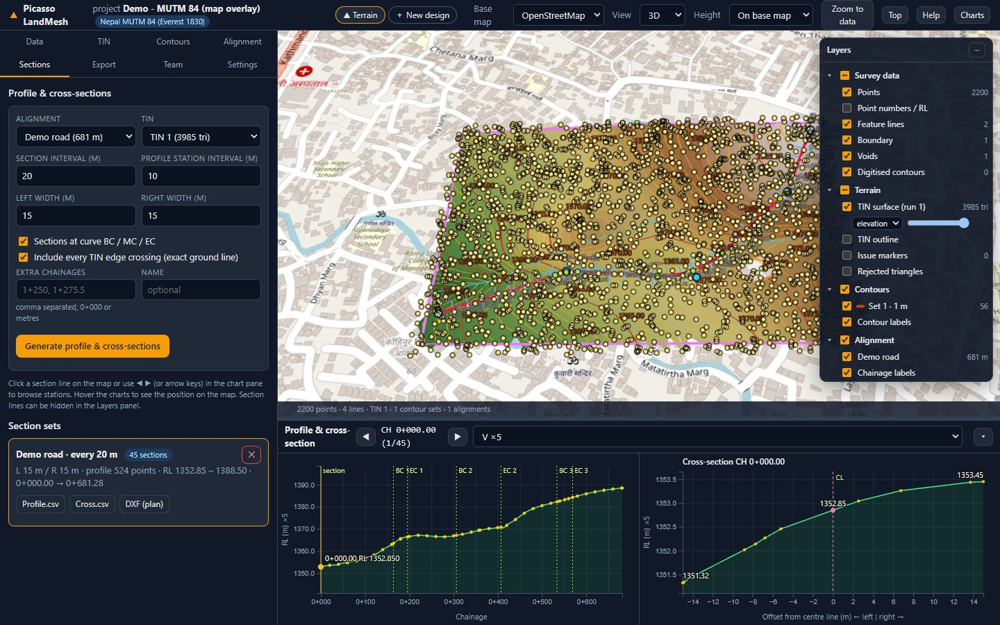
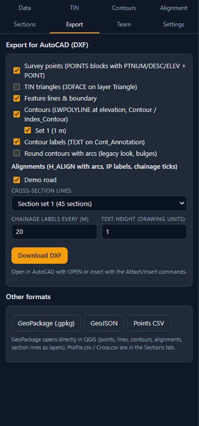

Terrain module
From survey points to a validated terrain model, contours, alignments and sections. Everything in this workspace is about the ground; the design work happens in the Road design module.
Workspace tour

| Control | What it does |
|---|---|
| Base map | OpenStreetMap, OpenTopoMap, Carto dark, Esri imagery or none. Only available when the project has a real coordinate system or a placed local grid. |
| View | 3D (tilt and rotate with the right mouse button), 2D (plan) or 2.5D (Columbus view). |
| Height | On base map drops the lowest survey point onto the base map so the terrain sits on the imagery; True elevation shows real heights above the ellipsoid. This changes the display only: levels, contours and sections keep their surveyed values. |
| Zoom to data, Top | Frame the survey; look straight down. |
| Charts | Opens the chart pane with the profile and cross-sections of the selected section set. |
| Status bar | Easting, northing and the terrain level under the cursor; the job indicator and, when the server is busy, a banner. |
Layers panel

- Survey data: points, point numbers / RL, feature lines, boundary, voids, digitised contours.
- Terrain: TIN surface (coloured by elevation), TIN outline, issue markers, rejected triangles.
- Contours and contour labels; Alignment with chainage labels and BC / MC / EC markers; Sections lines; Team comment pins.
Data: importing and drawing

Import survey data
- Choose the file: CSV, TXT or XYZ (
x y z [remark]orid x y z remark, header optional), XLSX, GeoJSON or DXF. For text files pick the delimiter (or auto-detect) and whether there is a header row; the column mapping shows which 0-based column is used for number, easting, northing, level and remark and can be edited as JSON. - Give the imported points a layer name (default
Points) so several surveys can be told apart. For DXF open DXF options and give the point layers (points and point blocks with attributes) and the feature-line layers; polylines on layers named likeBoundary,VoidorContourbecome constraint lines of that kind. - Tick Replace existing points and lines to start over instead of adding to the project, then press Import. Duplicates within the duplicate tolerance are merged; the Contents card shows what the project now holds.
Draw constraint lines
Choose Boundary, Hole / void or Breakline and click the vertices on the map; double-click or Esc finishes. Every line is listed under Constraint lines, where you can change its kind, hide it or delete it. Dashed lines are automatic suggestions in use.
| Kind | Effect on the terrain model |
|---|---|
| Boundary | Limits the TIN: nothing is triangulated outside. Several boundaries can be nested. |
| Hole / void | Excludes an area (a building, a pond, an unsurveyed patch). Islands inside a hole are supported. |
| Breakline | A ridge, a drain, a kerb: triangle edges follow the line and never cross it. Breakline levels come from the TIN when the line has no Z. |
Coordinate system and base map

The Settings tab lists the Nepal coordinate systems (MUTM 81, 84 and 87 and UTM 44 N / 45 N) and accepts any EPSG code or PROJ string as a custom system. A project on a local grid has no position on the Earth, so the base map is disabled; enter the longitude and latitude of one known survey point together with its local easting and northing under Place the local grid on the map to orient it on OpenStreetMap (accuracy of a few metres, for orientation only).
Constraints and the TIN

The three constraint modes
- Automatic - detect survey limit and gaps. When no boundary exists, Build TIN finds the survey limit and unsurveyed gaps itself, stores them as constraint lines (dashed) and uses them. Good for a quick first model.
- Semi-automatic - review suggestions first. Detect constraints lists each suggestion with its reason and confidence. Untick what you do not want and press Accept selected; accepted lines become ordinary constraints you can edit later.
- Manual - drawn / imported constraints only. Nothing is guessed; only your lines are used.
Triangle quality and rejected triangles
- The Use breaklines / boundary / hole boxes decide which constraint kinds take part in this build; Discard points with Z = 0 drops the zero levels legacy exports contain.
- Boundary rule: constraints + nesting (recommended) treats boundaries, holes and islands exactly; legacy deletes triangles that cross the lines, as the old software did.
- Under Edge triangle filters: max edge length or the long-edge factor (times the median edge) and min angle peel long or sliver triangles from the outer edge inwards. Triangles along a constraint line are never removed.
- Duplicate tolerance merges points closer than this distance; Name labels the run in the list.

Every build is kept as a TIN run. Contours, sections and designs refer to a run, so you can rebuild the terrain without losing earlier work. Spot height and Quick profile under Tools read levels from the selected run by clicking on the map.
Contours

- Interval and Index every N (major contours); an optional datum / base shifts the levels the contours are drawn at.
- Smoothing: none (exact on the TIN) or Chaikin (rounded). Min. length drops tiny closed loops; min. vertex spacing thins dense lines.
- Labels: every so many metres, with a format, prefix and suffix (for example
RL 1850 m) and a text height for DXF. - Colours: major / minor colours or a colour ramp by elevation, line widths and opacity. Apply changes the style of an existing set without regenerating it.
Alignments


- ＋ New alignment (draw on map): give a name and start chainage, then Add IPs on map. Click the IPs in order; drag an IP to move it; type the radius of each intermediate IP (the first and last IP carry no curve). Double-click or Esc stops adding.
- Save with a short change note; every version is kept under History. Open an alignment card to see its length, status and the curve data per IP (R, deflection, T, L, BC and EC chainages); Edit changes it, Zoom frames it.
- Download CSV writes the alignment file (
*_aln.csv); Import alignment reads such a file, a GeoJSON line or a DXFH_ALIGNpolyline, with a start chainage. - Open in Road design ▸ creates a road design seeded from this alignment on the latest TIN run.
Profile and cross-sections

Choose the alignment and the TIN run, the profile station interval, the section interval, the left and right widths and any extra chainages (for example 1+250, 1+275.5), then Generate profile & cross-sections. Browse stations with ◀ ▶ or the arrow keys, or click a section line on the map; hovering the charts shows the position on the map. Profile.csv, Cross.csv and DXF (plan) export the set.
Export

- DXF: points with the legacy
POINTSblock (number, remark, level as attributes), TIN faces, contours onContour/Index_Contourwith labels, feature lines and boundary, alignments onH_ALIGNwith true arcs, IP labels and chainage ticks, cross-section lines. Set the text height in drawing units. Open in AutoCAD withOPENor insert withATTACH. - GeoPackage opens directly in QGIS with points, lines, contours, alignments and section lines as layers. GeoJSON holds everything in one collection; Points CSV the merged points.
Large surveys
Surveys of several hundred thousand points work: points stream to the map in a compact binary form, the terrain is drawn in tiles and the TIN is cached on the server. Builds on large surveys queue behind other jobs; the panel shows your position and an estimate. If a build would not fit in the server's memory it is refused with a message instead of failing halfway.